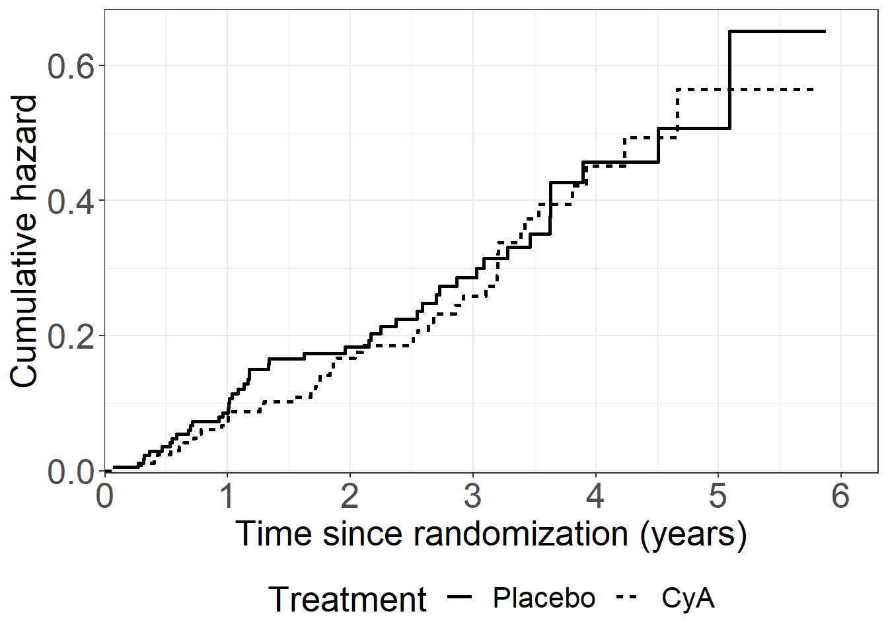
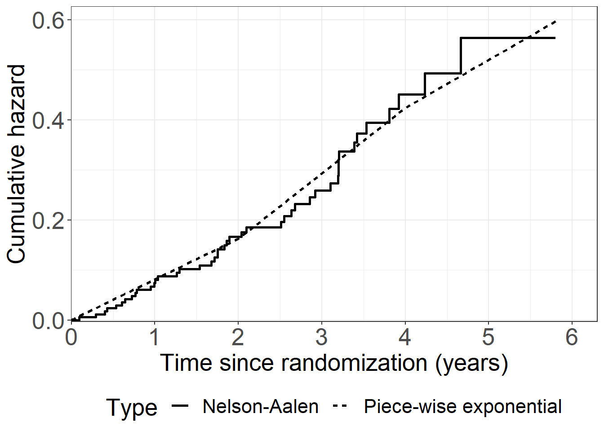
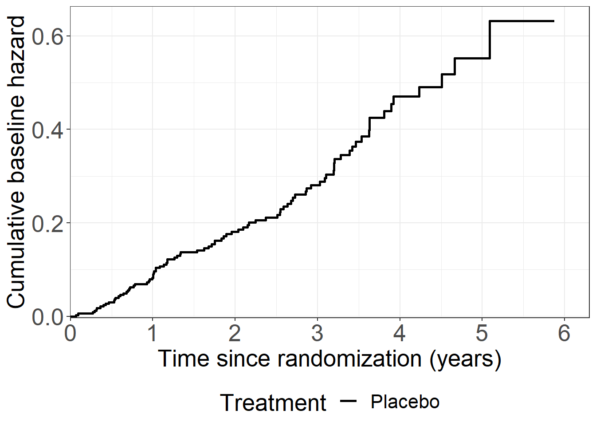

libname h "data";data pbc3; set h.pbc3; event=status ne 0; * Binary variable for events for later use;run;proc phreg data=pbc3; class tment(ref="0") / param=ref; model years*status(0)=tment;run;
#------------------------------------------------------------------##------- Chapter 2, R code, PBC3 data ----------------------------##------------------------------------------------------------------## Load required packages (should be installed if not already)require(haven)
Loading required package: haven
require(survival)require(ggplot2)require(timereg)
Loading required package: timereg
Warning: package 'timereg' was built under R version 4.2.3
require(gridExtra)
Loading required package: gridExtra
Warning: package 'gridExtra' was built under R version 4.2.3
Attaching package: 'gridExtra'
The following object is masked from 'package:dplyr':
combine
# Read pcb data and create a data framepbc3 <-read.csv("data/pbc3.csv")pbc3 <-data.frame(pbc3)# See the head of the datahead(pbc3)
id unit days status
Min. : 1 Min. :1.000 Min. : 1.0 Min. :0.0000
1st Qu.: 88 1st Qu.:2.000 1st Qu.: 509.0 1st Qu.:0.0000
Median :175 Median :3.000 Median : 929.0 Median :0.0000
Mean :175 Mean :3.037 Mean : 942.7 Mean :0.4327
3rd Qu.:262 3rd Qu.:4.000 3rd Qu.:1290.0 3rd Qu.:1.0000
Max. :349 Max. :6.000 Max. :2146.0 Max. :2.0000
tment sex age bili
Min. :0.0000 Min. :0.0000 Min. :26.00 Min. : 2.333
1st Qu.:0.0000 1st Qu.:0.0000 1st Qu.:47.00 1st Qu.: 11.330
Median :1.0000 Median :0.0000 Median :55.00 Median : 19.270
Mean :0.5043 Mean :0.1461 Mean :54.09 Mean : 45.473
3rd Qu.:1.0000 3rd Qu.:0.0000 3rd Qu.:62.00 3rd Qu.: 42.330
Max. :1.0000 Max. :1.0000 Max. :75.00 Max. :453.100
alb stage
Min. :20.63 Min. :2.000
1st Qu.:35.00 1st Qu.:2.000
Median :38.71 Median :3.000
Mean :38.37 Mean :2.852
3rd Qu.:42.00 3rd Qu.:4.000
Max. :58.00 Max. :4.000
NA's :6 NA's :58
# Note that status represents status at exit # (0: censored, 1: liver transpl, 2 : dead)# Per example 1.1.1, the main event of interest is "failure of medical treatment" # this is either death or liver transplant (status %in% c(1,2))# tment = 0 (placebo), tment = 1 (cyA)with(pbc3, table(status, tment))
tment
status 0 1
0 127 132
1 15 14
2 31 30
pbc3$tment_char <-ifelse(pbc3$tment ==0, "Placebo", "CyA")#------------------------------------------------------------------## -------- General plotting style ---------------------------------# #------------------------------------------------------------------## # Empty data example# pdata <- data.frame()# # playout <- ggplot(pdata) + # scale_x_continuous(expand = expansion(mult = c(0, 0))) + # scale_y_continuous(expand = expansion(mult = c(0, 0))) # playout# Extra wishes from PKA & HNRV to be added heretheme_general <-theme_bw() +theme(legend.position ="bottom", text =element_text(size =20), axis.text.x =element_text(size =20), axis.text.y =element_text(size =20)) theme_general
# Question: Legend position?#------------------------------------------------------------------##---------------- Figure 2.1 --------------------------------------##------------------------------------------------------------------## Fit a Nelson Aalen estimate of the cumulative hazard using the pbc3 data# Stratifying on treatment (i.e. doing it per treatment)nafit <-survfit(Surv(days, status !=0) ~ tment, data = pbc3)# Summary of fitsummary(nafit)
# Collect data for plot# Note that the standard errors produced by survfit are for the cumulative hazardnadata <-data.frame(cumhaz = nafit$cumhaz, cumhaz_se = nafit$std.err, time = nafit$time, tment =c(rep(names(nafit$strata)[1], nafit$strata[1]), rep(names(nafit$strata)[2], nafit$strata[2])))# Create Figure 2.1fig21 <-ggplot(aes(x = time /365.25, y = cumhaz, linetype = tment), data = nadata) +geom_step(size =1) +scale_linetype_discrete("Treatment", labels =c("Placebo", "CyA")) +xlab("Time since randomization (years)") +ylab("Cumulative hazard") +scale_x_continuous(expand =expansion(mult =c(0.001, 0.05)),limits =c(0, 6),breaks =seq(0, 6, 1)) +scale_y_continuous(expand =expansion(mult =c(0.005, 0.05))) + theme_general +theme(legend.position="bottom",legend.box="vertical")fig21

ggsave("figures/j_pbc3NAatreat.pdf", plot = fig21, width =29.7, height =21, units ="cm")# Estimates after two years# Treatment 0, observation after two yearstail(subset(nadata, nadata$time <=2& nadata$tment =="tment=0"),1)
[1] cumhaz cumhaz_se time tment
<0 rows> (or 0-length row.names)
# Treatment 1, observation after two yearstail(subset(nadata, nadata$time <=2& nadata$tment =="tment=1"),1)
cumhaz cumhaz_se time tment
151 0 0 1 tment=1
# Log rank test for treatment survdiff(Surv(days, status !=0) ~ tment, data = pbc3)
Call:
survdiff(formula = Surv(days, status != 0) ~ tment, data = pbc3)
N Observed Expected (O-E)^2/E (O-E)^2/V
tment=0 173 46 44.7 0.0388 0.0771
tment=1 176 44 45.3 0.0382 0.0771
Chisq= 0.1 on 1 degrees of freedom, p= 0.8
# Cutscuts <-c(0, 2, 4) *365.25# event/failure indicatorpbc3$fail <-ifelse(pbc3$status !=0, 1, 0)# Make the data ready using survSplitpbc3mult <-survSplit(Surv(days, fail) ~ ., pbc3,cut = cuts[-1], episode ="timegroup")# Number of observations per interval (timegroup)with(pbc3mult, table(tment, timegroup))
# Poisson model for treatment = 1require(stats)poismod_trt1 <-glm(fail ~offset(log(risktime)) +as.factor(timegroup) -1, data =subset(pbc3mult, tment ==1), family = poisson)summary(poismod_trt1)
Call:
glm(formula = fail ~ offset(log(risktime)) + as.factor(timegroup) -
1, family = poisson, data = subset(pbc3mult, tment == 1))
Deviance Residuals:
Min 1Q Median 3Q Max
-0.7232 -0.5700 -0.5700 -0.3295 2.9711
Coefficients:
Estimate Std. Error z value Pr(>|z|)
as.factor(timegroup)1 -8.4112 0.2041 -41.21 <2e-16 ***
as.factor(timegroup)2 -7.9351 0.2357 -33.67 <2e-16 ***
as.factor(timegroup)3 -8.2426 0.7071 -11.66 <2e-16 ***
---
Signif. codes: 0 '***' 0.001 '**' 0.01 '*' 0.05 '.' 0.1 ' ' 1
(Dispersion parameter for poisson family taken to be 1)
Null deviance: 331041.87 on 315 degrees of freedom
Residual deviance: 222.24 on 312 degrees of freedom
AIC: 316.24
Number of Fisher Scoring iterations: 6
# Transform back to original scale (delta method)exp(poismod_trt1$coefficients)
# Poisson model for treatment = 0poismod_trt0 <-glm(fail ~offset(log(risktime)) +as.factor(timegroup) -1, data =subset(pbc3mult, tment ==0), family = poisson)summary(poismod_trt0)
Call:
glm(formula = fail ~ offset(log(risktime)) + as.factor(timegroup) -
1, family = poisson, data = subset(pbc3mult, tment == 0))
Deviance Residuals:
Min 1Q Median 3Q Max
-0.7071 -0.6133 -0.6000 -0.3545 2.8610
Coefficients:
Estimate Std. Error z value Pr(>|z|)
as.factor(timegroup)1 -8.2645 0.1924 -42.95 <2e-16 ***
as.factor(timegroup)2 -7.9800 0.2425 -32.90 <2e-16 ***
as.factor(timegroup)3 -8.3712 0.7071 -11.84 <2e-16 ***
---
Signif. codes: 0 '***' 0.001 '**' 0.01 '*' 0.05 '.' 0.1 ' ' 1
(Dispersion parameter for poisson family taken to be 1)
Null deviance: 325736.02 on 308 degrees of freedom
Residual deviance: 237.11 on 305 degrees of freedom
AIC: 335.11
Number of Fisher Scoring iterations: 6
# Transform back to original scale (delta method)exp(poismod_trt0$coefficients)
ggsave("figures/j_pbc3pwchestimates.pdf", plot = fig23, width =29.7, height =21, units ="cm")#------------------------------------------------------------------##---------------- Figure 2.4 --------------------------------------##------------------------------------------------------------------## NA data from figure 2.1 model fittment1 <-subset(nadata, tment =="tment=1")# Estimated hazard per time groupsumdata$hazard_timegroup <- sumdata$fail / sumdata$risktime# View datahead(sumdata)
# Reformat for plotpiecepdata <-data.frame(cumhaz =c(nadata$cumhaz, nadata$pwch), time =rep(nadata$time, 2),tmentnum =rep(nadata$tmentnum, 2),type =c(rep("Nelson-Aalen", length(nadata$time)), rep("Piece-wise exponential", length(nadata$time))))# Only for treatment 1piecepdata1 <-subset(piecepdata, tmentnum ==1)# Create Figure 2.4fig24 <-ggplot(aes(x = time /365.25, y = cumhaz, linetype = type), data =subset(piecepdata1, type =="Nelson-Aalen")) +geom_step(size =1) +geom_line(aes(x = time /365.25, y = cumhaz, linetype = type), size =1,data =subset(piecepdata1, type =="Piece-wise exponential")) +labs(linetype ="Type") +xlab("Time since randomization (years)") +ylab("Cumulative hazard") +scale_x_continuous(expand =expansion(mult =c(0.001, 0.05)),limits =c(0, 6),breaks =seq(0, 6, 1)) +scale_y_continuous(expand =expansion(mult =c(0.005, 0.05))) + theme_generalfig24

ggsave("figures/j_pbc3pwchplac.pdf", plot = fig24, width =29.7, height =21, units ="cm")#------------------------------------------------------------------##---------------- Figure 2.5 --------------------------------------##------------------------------------------------------------------## Fit a Cox model using the pbc3 data with treatment as a covariatecoxfit <-coxph(Surv(days, status !=0) ~ tment, data = pbc3, method ="breslow")# Summary of fitsummary(coxfit)
Call:
coxph(formula = Surv(days, status != 0) ~ tment, data = pbc3,
method = "breslow")
n= 349, number of events= 90
coef exp(coef) se(coef) z Pr(>|z|)
tment -0.05854 0.94314 0.21092 -0.278 0.781
exp(coef) exp(-coef) lower .95 upper .95
tment 0.9431 1.06 0.6238 1.426
Concordance= 0.517 (se = 0.029 )
Likelihood ratio test= 0.08 on 1 df, p=0.8
Wald test = 0.08 on 1 df, p=0.8
Score (logrank) test = 0.08 on 1 df, p=0.8
# Extract cumulative baseline hazardcoxcumhaz <-basehaz(coxfit, centered =FALSE)# Collect data for plotcoxdata <-data.frame(cumhaz = coxcumhaz$hazard, time = coxcumhaz$time, tment =rep("0", nrow(coxcumhaz)), type =rep("Breslow estimate", nrow(coxcumhaz)))# Create Figure 2.5fig25 <-ggplot(aes(x = time /365.25, y = cumhaz, linetype = tment), data = coxdata) +geom_step(size =1) +xlab("Time since randomization (years)") +ylab("Cumulative baseline hazard") +scale_linetype_discrete("Treatment", labels =c("Placebo")) +scale_x_continuous(expand =expansion(mult =c(0.001, 0.05)),limits =c(0, 6),breaks =seq(0, 6, 1)) +scale_y_continuous(expand =expansion(mult =c(0.005, 0.05))) + theme_generalfig25

ggsave("figures/j_pbc3breslow.pdf", plot = fig25, width =29.7, height =21, units ="cm")#------------------------------------------------------------------##---------------- Table 2.3 ---------------------------------------##------------------------------------------------------------------## Calculate average covariate values of albumin and bilirubin per treatment group# Summarizerequire(dplyr)sumdata <- pbc3 %>%group_by(tment, tment_char) %>%summarise(n =sum(id !=0), average_albumin =mean(alb, na.rm =TRUE), # NOTE: Removes missing observations from mean computationaverage_bilirubin =mean(bili, na.rm =TRUE), )
`summarise()` has grouped output by 'tment'. You can override using the
`.groups` argument.
#------------------------------------------------------------------##---------------- Table 2.4 ---------------------------------------##------------------------------------------------------------------## Cox model with treatment, albumin and bilirubin as covariates coxfit <-coxph(Surv(days, status !=0) ~ tment + alb + bili,data = pbc3)summary(coxfit)
Call:
coxph(formula = Surv(days, status != 0) ~ tment + alb + bili,
data = pbc3)
n= 343, number of events= 88
(6 observations deleted due to missingness)
coef exp(coef) se(coef) z Pr(>|z|)
tment -0.4965639 0.6086184 0.2256162 -2.201 0.0277 *
alb -0.1156596 0.8907784 0.0212810 -5.435 5.48e-08 ***
bili 0.0089494 1.0089895 0.0009801 9.131 < 2e-16 ***
---
Signif. codes: 0 '***' 0.001 '**' 0.01 '*' 0.05 '.' 0.1 ' ' 1
exp(coef) exp(-coef) lower .95 upper .95
tment 0.6086 1.6431 0.3911 0.9471
alb 0.8908 1.1226 0.8544 0.9287
bili 1.0090 0.9911 1.0071 1.0109
Concordance= 0.806 (se = 0.021 )
Likelihood ratio test= 99.06 on 3 df, p=<2e-16
Wald test = 121 on 3 df, p=<2e-16
Score (logrank) test = 172.3 on 3 df, p=<2e-16
#------------------------------------------------------------------##---------------- Table 2.5 ---------------------------------------##------------------------------------------------------------------## Poisson model with treatment, albumin and bilirubin as covariatespbc3mult$tment_char <-as.factor(pbc3mult$tment_char)pbc3mult$tment_char <-relevel(pbc3mult$tment_char, ref ="Placebo")poismod_t25 <-glm(fail ~offset(log(risktime)) +as.factor(timegroup) + tment_char + alb + bili,data = pbc3mult,family = poisson)summary(poismod_t25)
Call:
glm(formula = fail ~ offset(log(risktime)) + as.factor(timegroup) +
tment_char + alb + bili, family = poisson, data = pbc3mult)
Deviance Residuals:
Min 1Q Median 3Q Max
-2.4119 -0.5253 -0.3722 -0.2312 2.8728
Coefficients:
Estimate Std. Error z value Pr(>|z|)
(Intercept) -4.7682896 0.9749615 -4.891 1.0e-06 ***
as.factor(timegroup)1 -0.3196440 0.6042836 -0.529 0.5968
as.factor(timegroup)2 0.5381074 0.6022200 0.894 0.3716
tment_charPlacebo 0.4753406 0.2240970 2.121 0.0339 *
alb -0.1123359 0.0212829 -5.278 1.3e-07 ***
bili 0.0084593 0.0009392 9.007 < 2e-16 ***
---
Signif. codes: 0 '***' 0.001 '**' 0.01 '*' 0.05 '.' 0.1 ' ' 1
(Dispersion parameter for poisson family taken to be 1)
Null deviance: 449.14 on 610 degrees of freedom
Residual deviance: 350.73 on 605 degrees of freedom
(12 observations deleted due to missingness)
AIC: 538.73
Number of Fisher Scoring iterations: 6
Call:
glm(formula = fail ~ offset(log(risktime)) + as.factor(timegroup) +
tment_char + alb + log2bili + tment_char * timegroup, family = poisson,
data = pbc3mult)
Deviance Residuals:
Min 1Q Median 3Q Max
-1.8788 -0.4885 -0.3022 -0.1818 3.0164
Coefficients: (2 not defined because of singularities)
Estimate Std. Error z value Pr(>|z|)
(Intercept) -8.912206 1.410958 -6.316 2.68e-10 ***
as.factor(timegroup)2 0.899710 1.029079 0.874 0.382
as.factor(timegroup)1 0.005499 1.026826 0.005 0.996
tment_charPlacebo 1.266273 1.229390 1.030 0.303
alb -0.086405 0.021665 -3.988 6.65e-05 ***
log2bili 0.648711 0.073669 8.806 < 2e-16 ***
timegroup2 NA NA NA NA
timegroup1 NA NA NA NA
tment_charPlacebo:timegroup2 -0.804338 1.272830 -0.632 0.527
tment_charPlacebo:timegroup1 -0.704610 1.262063 -0.558 0.577
---
Signif. codes: 0 '***' 0.001 '**' 0.01 '*' 0.05 '.' 0.1 ' ' 1
(Dispersion parameter for poisson family taken to be 1)
Null deviance: 449.14 on 610 degrees of freedom
Residual deviance: 328.82 on 603 degrees of freedom
(12 observations deleted due to missingness)
AIC: 520.82
Number of Fisher Scoring iterations: 6
Call:
glm(formula = fail ~ offset(log(risktime)) + as.factor(timegroup) +
tment_char + alb + log2bili + tment_char * timegroup, family = poisson,
data = pbc3mult)
Deviance Residuals:
Min 1Q Median 3Q Max
-1.8788 -0.4885 -0.3022 -0.1818 3.0164
Coefficients: (2 not defined because of singularities)
Estimate Std. Error z value Pr(>|z|)
(Intercept) -8.906706 0.949577 -9.380 < 2e-16 ***
as.factor(timegroup)3 -0.005499 1.026826 -0.005 0.9957
as.factor(timegroup)2 0.894211 0.317101 2.820 0.0048 **
tment_charPlacebo 0.561662 0.290915 1.931 0.0535 .
alb -0.086405 0.021665 -3.988 6.65e-05 ***
log2bili 0.648711 0.073669 8.806 < 2e-16 ***
timegroup3 NA NA NA NA
timegroup2 NA NA NA NA
tment_charPlacebo:timegroup3 0.704610 1.262063 0.558 0.5766
tment_charPlacebo:timegroup2 -0.099728 0.442503 -0.225 0.8217
---
Signif. codes: 0 '***' 0.001 '**' 0.01 '*' 0.05 '.' 0.1 ' ' 1
(Dispersion parameter for poisson family taken to be 1)
Null deviance: 449.14 on 610 degrees of freedom
Residual deviance: 328.82 on 603 degrees of freedom
(12 observations deleted due to missingness)
AIC: 520.82
Number of Fisher Scoring iterations: 6
Call:
glm(formula = fail ~ offset(log(risktime)) + as.factor(timegroup) +
tment_char + alb + log2bili + alb * timegroup, family = poisson,
data = pbc3mult)
Deviance Residuals:
Min 1Q Median 3Q Max
-1.9765 -0.4756 -0.2941 -0.1722 2.9166
Coefficients: (2 not defined because of singularities)
Estimate Std. Error z value Pr(>|z|)
(Intercept) -9.29362 5.94435 -1.563 0.1179
as.factor(timegroup)2 -0.01433 6.09060 -0.002 0.9981
as.factor(timegroup)1 1.22609 6.02995 0.203 0.8389
tment_charPlacebo 0.56130 0.22300 2.517 0.0118 *
alb -0.06542 0.15336 -0.427 0.6697
log2bili 0.64608 0.07361 8.777 <2e-16 ***
timegroup2 NA NA NA NA
timegroup1 NA NA NA NA
alb:timegroup2 0.01311 0.15739 0.083 0.9336
alb:timegroup1 -0.04484 0.15605 -0.287 0.7739
---
Signif. codes: 0 '***' 0.001 '**' 0.01 '*' 0.05 '.' 0.1 ' ' 1
(Dispersion parameter for poisson family taken to be 1)
Null deviance: 449.14 on 610 degrees of freedom
Residual deviance: 327.45 on 603 degrees of freedom
(12 observations deleted due to missingness)
AIC: 519.45
Number of Fisher Scoring iterations: 6
Call:
glm(formula = fail ~ offset(log(risktime)) + as.factor(timegroup) +
tment_char + alb + log2bili + alb * timegroup, family = poisson,
data = pbc3mult)
Deviance Residuals:
Min 1Q Median 3Q Max
-1.9765 -0.4756 -0.2941 -0.1722 2.9166
Coefficients: (2 not defined because of singularities)
Estimate Std. Error z value Pr(>|z|)
(Intercept) -8.06752 1.11184 -7.256 3.99e-13 ***
as.factor(timegroup)3 -1.22609 6.02995 -0.203 0.8389
as.factor(timegroup)2 -1.24042 1.59864 -0.776 0.4378
tment_charPlacebo 0.56130 0.22300 2.517 0.0118 *
alb -0.11026 0.02791 -3.951 7.79e-05 ***
log2bili 0.64608 0.07361 8.777 < 2e-16 ***
timegroup3 NA NA NA NA
timegroup2 NA NA NA NA
alb:timegroup3 0.04484 0.15605 0.287 0.7739
alb:timegroup2 0.05795 0.04376 1.324 0.1854
---
Signif. codes: 0 '***' 0.001 '**' 0.01 '*' 0.05 '.' 0.1 ' ' 1
(Dispersion parameter for poisson family taken to be 1)
Null deviance: 449.14 on 610 degrees of freedom
Residual deviance: 327.45 on 603 degrees of freedom
(12 observations deleted due to missingness)
AIC: 519.45
Number of Fisher Scoring iterations: 6
Call:
glm(formula = fail ~ offset(log(risktime)) + as.factor(timegroup) +
tment_char + alb + log2bili + log2bili * timegroup, family = poisson,
data = pbc3mult)
Deviance Residuals:
Min 1Q Median 3Q Max
-2.0280 -0.4825 -0.2965 -0.1821 2.9014
Coefficients: (2 not defined because of singularities)
Estimate Std. Error z value Pr(>|z|)
(Intercept) -6.87566 2.36338 -2.909 0.00362 **
as.factor(timegroup)2 -0.69600 2.32124 -0.300 0.76430
as.factor(timegroup)1 -2.41998 2.30859 -1.048 0.29452
tment_charPlacebo 0.51454 0.22373 2.300 0.02146 *
alb -0.08570 0.02174 -3.942 8.1e-05 ***
log2bili 0.30512 0.48171 0.633 0.52646
timegroup2 NA NA NA NA
timegroup1 NA NA NA NA
log2bili:timegroup2 0.25235 0.49539 0.509 0.61047
log2bili:timegroup1 0.40532 0.49015 0.827 0.40828
---
Signif. codes: 0 '***' 0.001 '**' 0.01 '*' 0.05 '.' 0.1 ' ' 1
(Dispersion parameter for poisson family taken to be 1)
Null deviance: 449.14 on 610 degrees of freedom
Residual deviance: 327.67 on 603 degrees of freedom
(12 observations deleted due to missingness)
AIC: 519.67
Number of Fisher Scoring iterations: 6
Call:
glm(formula = fail ~ offset(log(risktime)) + as.factor(timegroup) +
tment_char + alb + log2bili + log2bili * timegroup, family = poisson,
data = pbc3mult)
Deviance Residuals:
Min 1Q Median 3Q Max
-2.0280 -0.4825 -0.2965 -0.1821 2.9014
Coefficients: (2 not defined because of singularities)
Estimate Std. Error z value Pr(>|z|)
(Intercept) -9.29563 1.02069 -9.107 < 2e-16 ***
as.factor(timegroup)3 2.41998 2.30859 1.048 0.2945
as.factor(timegroup)2 1.72397 0.88760 1.942 0.0521 .
tment_charPlacebo 0.51454 0.22373 2.300 0.0215 *
alb -0.08570 0.02174 -3.942 8.10e-05 ***
log2bili 0.71044 0.09260 7.672 1.69e-14 ***
timegroup3 NA NA NA NA
timegroup2 NA NA NA NA
log2bili:timegroup3 -0.40532 0.49015 -0.827 0.4083
log2bili:timegroup2 -0.15296 0.15024 -1.018 0.3086
---
Signif. codes: 0 '***' 0.001 '**' 0.01 '*' 0.05 '.' 0.1 ' ' 1
(Dispersion parameter for poisson family taken to be 1)
Null deviance: 449.14 on 610 degrees of freedom
Residual deviance: 327.67 on 603 degrees of freedom
(12 observations deleted due to missingness)
AIC: 519.67
Number of Fisher Scoring iterations: 6
## LR tests # Base model; no interactionpoismod_t29_base <-glm(fail ~offset(log(risktime)) +as.factor(timegroup) + tment_char + alb + log2bili,data = pbc3mult,family = poisson)# Column 1lrtest(poismod_t29_base, poismod_t29_11)
TableGrob (3 x 1) "arrange": 3 grobs
z cells name grob
1 1 (1-1,1-1) arrange gtable[layout]
2 2 (2-2,1-1) arrange gtable[layout]
3 3 (3-3,1-1) arrange gtable[layout]
ggsave("figures/j_pbc3aalen3.pdf", plot = fig211, width =29.7, height =35, units ="cm")#------------------------------------------------------------------##---------------- Table 2.10 --------------------------------------##------------------------------------------------------------------## -- Only treatment -- ## In text p-values prior to Table 2.10nonparmod0 <-aalen(Surv(days, status !=0) ~ tment, data = pbc3) summary(nonparmod0)
Additive Aalen Model
Test for nonparametric terms
Test for non-significant effects
Supremum-test of significance p-value H_0: B(t)=0
(Intercept) 5.96 0.000
tment 1.60 0.726
Test for time invariant effects
Kolmogorov-Smirnov test p-value H_0:constant effect
(Intercept) 0.107 0.529
tment 0.136 0.586
Cramer von Mises test p-value H_0:constant effect
(Intercept) 7.62 0.412
tment 4.54 0.691
Call:
aalen(formula = Surv(days, status != 0) ~ tment, data = pbc3)
# Hypothesis of a time-constant hazard difference for treatment# Constant effect of treatmentnonparmod01 <-aalen(Surv(days, status !=0) ~const(tment), data = pbc3) summary(nonparmod01)
Additive Aalen Model
Test for nonparametric terms
Test for non-significant effects
Supremum-test of significance p-value H_0: B(t)=0
(Intercept) 6.62 0
Test for time invariant effects
Kolmogorov-Smirnov test p-value H_0:constant effect
(Intercept) 0.0914 0.398
Cramer von Mises test p-value H_0:constant effect
(Intercept) 4.97 0.27
Parametric terms :
Coef. SE Robust SE z P-val lower2.5% upper97.5%
const(tment) -1.61e-05 5.75e-05 5.74e-05 -0.28 0.779 -0.000129 9.66e-05
Call:
aalen(formula = Surv(days, status != 0) ~ const(tment), data = pbc3)
# -- Treatment, albumin, bilirubin -- ## Table 2.10, first two columnsnonparmod1 <-aalen(Surv(days, status !=0) ~ tment + alb + bili, data = pbc3) summary(nonparmod1)
Additive Aalen Model
Test for nonparametric terms
Test for non-significant effects
Supremum-test of significance p-value H_0: B(t)=0
(Intercept) 3.62 0.005
tment 2.66 0.147
alb 3.82 0.002
bili 4.83 0.000
Test for time invariant effects
Kolmogorov-Smirnov test p-value H_0:constant effect
(Intercept) 0.30300 0.924
tment 0.12100 0.709
alb 0.00666 0.962
bili 0.00301 0.184
Cramer von Mises test p-value H_0:constant effect
(Intercept) 14.20000 0.988
tment 3.29000 0.804
alb 0.00826 0.986
bili 0.00203 0.324
Call:
aalen(formula = Surv(days, status != 0) ~ tment + alb + bili,
data = pbc3)
# Table 2.10, last columnsnonparmod2 <-aalen(Surv(days, status !=0) ~const(tment) +const(alb) +const(bili), data = pbc3) summary(nonparmod2)
Additive Aalen Model
Test for nonparametric terms
Test for non-significant effects
Supremum-test of significance p-value H_0: B(t)=0
(Intercept) 4.03 0.001
Test for time invariant effects
Kolmogorov-Smirnov test p-value H_0:constant effect
(Intercept) 0.119 0.194
Cramer von Mises test p-value H_0:constant effect
(Intercept) 9.6 0.125
Parametric terms :
Coef. SE Robust SE z P-val lower2.5% upper97.5%
const(tment) -1.13e-04 5.90e-05 5.51e-05 -2.05 4.01e-02 -2.29e-04 2.64e-06
const(alb) -2.30e-05 6.28e-06 6.11e-06 -3.77 1.63e-04 -3.53e-05 -1.07e-05
const(bili) 6.30e-06 1.32e-06 1.05e-06 5.98 2.17e-09 3.71e-06 8.89e-06
Call:
aalen(formula = Surv(days, status != 0) ~ const(tment) + const(alb) +
const(bili), data = pbc3)
# In-textnonparmod3 <-aalen(Surv(days, status !=0) ~const(tment) + alb + bili, data = pbc3) summary(nonparmod3)
Additive Aalen Model
Test for nonparametric terms
Test for non-significant effects
Supremum-test of significance p-value H_0: B(t)=0
(Intercept) 3.60 0.005
alb 3.80 0.002
bili 4.83 0.000
Test for time invariant effects
Kolmogorov-Smirnov test p-value H_0:constant effect
(Intercept) 0.28500 0.945
alb 0.00954 0.811
bili 0.00315 0.156
Cramer von Mises test p-value H_0:constant effect
(Intercept) 11.50000 0.989
alb 0.01920 0.903
bili 0.00238 0.276
Parametric terms :
Coef. SE Robust SE z P-val lower2.5% upper97.5%
const(tment) -0.00011 5.92e-05 5.58e-05 -1.97 0.049 -0.000226 6.03e-06
Call:
aalen(formula = Surv(days, status != 0) ~ const(tment) + alb +
bili, data = pbc3)
# -- Quadratic effects -- #nonparmod41 <-aalen(Surv(days, status !=0) ~ tment +I(alb/10) +I(bili/100) +I((bili/100)^2), data = pbc3) summary(nonparmod41)
Additive Aalen Model
Test for nonparametric terms
Test for non-significant effects
Supremum-test of significance p-value H_0: B(t)=0
(Intercept) 3.94 0.001
tment 2.59 0.135
I(alb/10) 4.04 0.001
I(bili/100) 3.82 0.000
I((bili/100)^2) 3.02 0.042
Test for time invariant effects
Kolmogorov-Smirnov test p-value H_0:constant effect
(Intercept) 0.3080 0.935
tment 0.1230 0.685
I(alb/10) 0.0912 0.834
I(bili/100) 0.6370 0.424
I((bili/100)^2) 0.5160 0.156
Cramer von Mises test p-value H_0:constant effect
(Intercept) 24.00 0.941
tment 3.94 0.756
I(alb/10) 2.38 0.864
I(bili/100) 188.00 0.309
I((bili/100)^2) 101.00 0.183
Call:
aalen(formula = Surv(days, status != 0) ~ tment + I(alb/10) +
I(bili/100) + I((bili/100)^2), data = pbc3)
nonparmod42 <-aalen(Surv(days, status !=0) ~ tment +I(alb/10) +I(bili/100) +I((alb/10)^2), data = pbc3) summary(nonparmod42)
Additive Aalen Model
Test for nonparametric terms
Test for non-significant effects
Supremum-test of significance p-value H_0: B(t)=0
(Intercept) 3.25 0.024
tment 2.74 0.097
I(alb/10) 3.02 0.046
I(bili/100) 4.86 0.000
I((alb/10)^2) 2.79 0.086
Test for time invariant effects
Kolmogorov-Smirnov test p-value H_0:constant effect
(Intercept) 9.260 0.194
tment 0.096 0.818
I(alb/10) 4.880 0.210
I(bili/100) 0.371 0.050
I((alb/10)^2) 0.626 0.216
Cramer von Mises test p-value H_0:constant effect
(Intercept) 28500.00 0.310
tment 1.78 0.915
I(alb/10) 8370.00 0.309
I(bili/100) 32.00 0.160
I((alb/10)^2) 144.00 0.305
Call:
aalen(formula = Surv(days, status != 0) ~ tment + I(alb/10) +
I(bili/100) + I((alb/10)^2), data = pbc3)
nonparmod43 <-aalen(Surv(days, status !=0) ~const(tment) +I(alb/10) +I(bili/100) +I((bili/100)^2), data = pbc3) summary(nonparmod43)
Additive Aalen Model
Test for nonparametric terms
Test for non-significant effects
Supremum-test of significance p-value H_0: B(t)=0
(Intercept) 3.82 0.000
I(alb/10) 4.02 0.001
I(bili/100) 3.85 0.002
I((bili/100)^2) 3.01 0.047
Test for time invariant effects
Kolmogorov-Smirnov test p-value H_0:constant effect
(Intercept) 0.440 0.662
I(alb/10) 0.117 0.616
I(bili/100) 0.612 0.428
I((bili/100)^2) 0.515 0.169
Cramer von Mises test p-value H_0:constant effect
(Intercept) 48.20 0.757
I(alb/10) 4.51 0.601
I(bili/100) 169.00 0.327
I((bili/100)^2) 105.00 0.169
Parametric terms :
Coef. SE Robust SE z P-val lower2.5% upper97.5%
const(tment) -0.000108 5.83e-05 5.7e-05 -1.89 0.0582 -0.000222 6.27e-06
Call:
aalen(formula = Surv(days, status != 0) ~ const(tment) + I(alb/10) +
I(bili/100) + I((bili/100)^2), data = pbc3)
nonparmod44 <-aalen(Surv(days, status !=0) ~const(tment) +I(alb/10) +I(bili/100) +I((alb/10)^2), data = pbc3) summary(nonparmod44)
Additive Aalen Model
Test for nonparametric terms
Test for non-significant effects
Supremum-test of significance p-value H_0: B(t)=0
(Intercept) 3.23 0.017
I(alb/10) 3.00 0.038
I(bili/100) 4.88 0.000
I((alb/10)^2) 2.77 0.082
Test for time invariant effects
Kolmogorov-Smirnov test p-value H_0:constant effect
(Intercept) 9.420 0.239
I(alb/10) 4.950 0.241
I(bili/100) 0.366 0.061
I((alb/10)^2) 0.635 0.248
Cramer von Mises test p-value H_0:constant effect
(Intercept) 30500.0 0.337
I(alb/10) 8910.0 0.332
I(bili/100) 34.6 0.158
I((alb/10)^2) 152.0 0.333
Parametric terms :
Coef. SE Robust SE z P-val lower2.5% upper97.5%
const(tment) -0.000115 5.89e-05 5.51e-05 -2.09 0.0366 -0.00023 4.42e-07
Call:
aalen(formula = Surv(days, status != 0) ~ const(tment) + I(alb/10) +
I(bili/100) + I((alb/10)^2), data = pbc3)
# -- Interactions -- #nonparmod51 <-aalen(Surv(days, status !=0) ~const(tment) +const(alb) +const(bili) +const(tment * bili), data = pbc3) summary(nonparmod51)
Additive Aalen Model
Test for nonparametric terms
Test for non-significant effects
Supremum-test of significance p-value H_0: B(t)=0
(Intercept) 4.03 0
Test for time invariant effects
Kolmogorov-Smirnov test p-value H_0:constant effect
(Intercept) 0.123 0.165
Cramer von Mises test p-value H_0:constant effect
(Intercept) 10.5 0.099
Parametric terms :
Coef. SE Robust SE z P-val lower2.5%
const(tment) -5.30e-06 8.06e-05 6.23e-05 -0.0851 9.32e-01 -1.63e-04
const(alb) -2.35e-05 6.20e-06 6.04e-06 -3.9000 9.69e-05 -3.57e-05
const(bili) 8.18e-06 2.38e-06 1.20e-06 6.8400 7.77e-12 3.52e-06
const(tment * bili) -3.16e-06 2.79e-06 1.80e-06 -1.7600 7.92e-02 -8.63e-06
upper97.5%
const(tment) 1.53e-04
const(alb) -1.13e-05
const(bili) 1.28e-05
const(tment * bili) 2.31e-06
Call:
aalen(formula = Surv(days, status != 0) ~ const(tment) + const(alb) +
const(bili) + const(tment * bili), data = pbc3)
nonparmod52 <-aalen(Surv(days, status !=0) ~const(tment) +const(alb) +const(bili) +const(tment * alb), data = pbc3) summary(nonparmod52)
Additive Aalen Model
Test for nonparametric terms
Test for non-significant effects
Supremum-test of significance p-value H_0: B(t)=0
(Intercept) 3.06 0.007
Test for time invariant effects
Kolmogorov-Smirnov test p-value H_0:constant effect
(Intercept) 0.12 0.186
Cramer von Mises test p-value H_0:constant effect
(Intercept) 9.68 0.111
Parametric terms :
Coef. SE Robust SE z P-val lower2.5%
const(tment) 2.77e-05 5.45e-04 4.81e-04 0.0576 9.54e-01 -1.04e-03
const(alb) -2.11e-05 8.63e-06 7.61e-06 -2.7700 5.54e-03 -3.80e-05
const(bili) 6.29e-06 1.32e-06 1.05e-06 5.9600 2.45e-09 3.70e-06
const(tment * alb) -3.60e-06 1.31e-05 1.18e-05 -0.3060 7.59e-01 -2.93e-05
upper97.5%
const(tment) 1.10e-03
const(alb) -4.19e-06
const(bili) 8.88e-06
const(tment * alb) 2.21e-05
Call:
aalen(formula = Surv(days, status != 0) ~ const(tment) + const(alb) +
const(bili) + const(tment * alb), data = pbc3)
#------------------------------------------------------------------##---------------- Table 2.11 --------------------------------------##------------------------------------------------------------------## -- In-text -- ## Additive hazards model with piecewise constant baseline hazards# Model with only treatment as covariatehead(pbc3mult)
Warning: step size truncated: out of bounds
Warning: step size truncated: out of bounds
Warning: step size truncated: out of bounds
Warning: step size truncated: out of bounds
Warning: step size truncated: out of bounds
Warning: step size truncated: out of bounds
Warning: step size truncated: out of bounds
Warning: step size truncated: out of bounds
Warning: step size truncated: out of bounds
Warning: step size truncated: out of bounds
Warning: step size truncated: out of bounds
Warning: step size truncated: out of bounds
Warning: step size truncated: out of bounds
Warning: step size truncated: out of bounds
Warning: step size truncated: out of bounds
Warning: step size truncated: out of bounds
Warning: step size truncated: out of bounds
Warning: step size truncated: out of bounds
Warning: step size truncated: out of bounds
Warning: step size truncated: out of bounds
Warning: step size truncated: out of bounds
Warning: step size truncated: out of bounds
Warning: step size truncated: out of bounds
Warning: step size truncated: out of bounds
Warning: glm.fit: algorithm did not converge
Warning: glm.fit: algorithm stopped at boundary value
summary(piece_aalen2)
Call:
glm(formula = fail ~ time1 + time2 + time3 + tment1 + albny +
biliny - 1, family = poisson(link = "identity"), data = pbc3add,
start = c(0.3, 0.35, 0.4, -0.05, -0.8, 2))
Deviance Residuals:
Min 1Q Median 3Q Max
-2.2780 -0.8521 -0.6455 -0.4069 2.2893
Coefficients:
Estimate Std. Error z value Pr(>|z|)
time1 7.925e-04 7.346e-05 10.788 < 2e-16 ***
time2 1.029e-03 8.866e-05 11.608 < 2e-16 ***
time3 9.910e-04 1.890e-04 5.244 1.57e-07 ***
tment1 -1.023e-04 6.006e-05 -1.704 0.0883 .
albny -1.902e-03 4.274e-04 -4.451 8.56e-06 ***
biliny 9.328e-03 1.360e-03 6.860 6.89e-12 ***
---
Signif. codes: 0 '***' 0.001 '**' 0.01 '*' 0.05 '.' 0.1 ' ' 1
(Dispersion parameter for poisson family taken to be 1)
Null deviance: Inf on 611 degrees of freedom
Residual deviance: 432.31 on 605 degrees of freedom
(12 observations deleted due to missingness)
AIC: 620.31
Number of Fisher Scoring iterations: 25